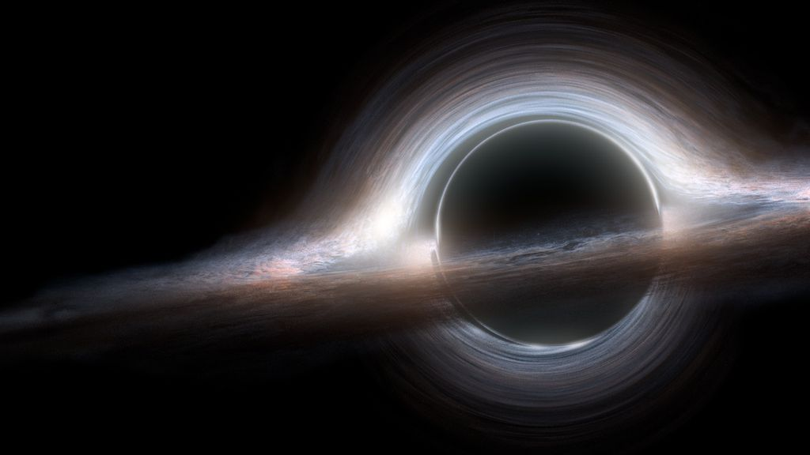
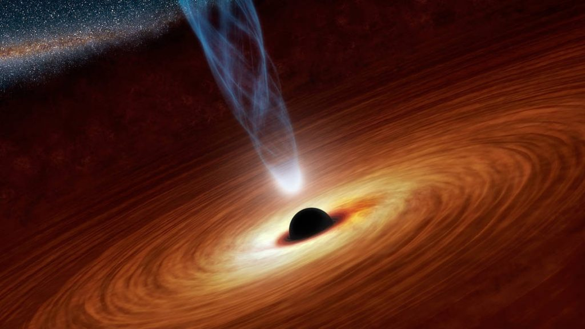

O que são Buracos Negros?

Resumidamente, um buraco negro é uma região do espaço que possui tanta massa
concentrada, que nada consegue escapar da
atração de sua gravidade, nem mesmo a própria luz com sua velocidade incrível de 299 792
458 m/s. O buraco negro é o resultado
da morte de uma estrela supermassiva. Imagine uma estrela muito maior que o
sol, dentro dela acontece o que chamamos de fusão nuclear.
Ela cria uma pressão para fora da estrela, e ao mesmo tempo a gravidade joga toda essa pressão
para dentro dela novamente. Porém, um dia
esse combustível começa a se esgotar, e a única força que sobra é da gravidade, então, essa
estrela começa se contrair até não conseguir mais
se sustentar. Caso ela haja 6x mais a massa do sol, ela se transforma em um
buraco negro. Caso contrário, ela se torna uma "anã branca".
Conheça os tipos de Buracos Negros:
Buraco Negro Estelar

Uma equipe chinesa de astrônomos descobriu um buraco negro que superou todas as estimativas sobre o tamanho de uma estrela negra.
Até esta descoberta, acreditava-se que um buraco negro resultante da morte de uma estrela não poderia
ter mais do que 20 vezes a massa do sol.
Agora a LB-1 (Sistema solar deste buraco negro) vem desafiar as teorias, mostrando que contém
uma estrela negra com 70x o tamanho do sol.
Buraco Negro Supermassivo (Quasar)

Até esta descoberta, acreditava-se que um buraco negro resultante da morte de uma estrela não poderia
ter mais do que 20 vezes a massa do sol.
Porém, esse é uma estrela negra supermassiva mais antiga do mundo, e sua massa é mais de 1,6
bilhões de vezes superior à massa do sol. Sua distância
é superior a 13 bilhões de anos-luz.
Imagem real de um Buraco Negro
mostra luz saindo do buraco negro – Foto: EHT COLLABORATION)